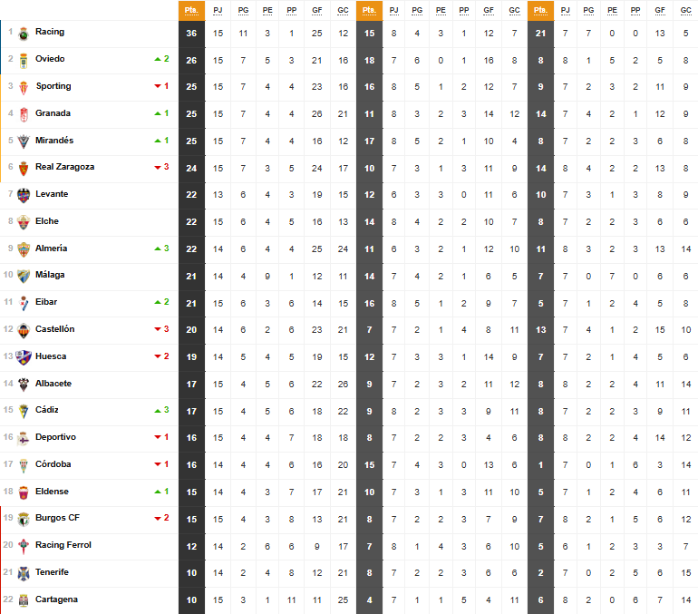

La clasificación actual

El Málaga CF ya es el equipo menos goleado de Segunda División
El equipo blanquiazul mantenía una batalla de cuerpo a cuerpo frente al Mirandés, pero la jornada 15 lo ha terminado de decantar todo. El equipo de Alessio Lisci recibió un sol gol por parte del Castellón (1-3) y los deberes para los de Sergio Pellicer eran muy claros: mantener la portería a cero. Pues lo hicieron y con un ejercicio de defensa magistral para sacar un punto de La Romareda y convertirse en el equipo que menos tantos ha encajado de Segunda División.